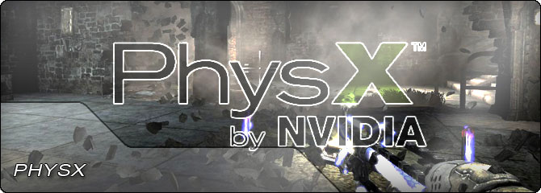

UDN
Search public documentation:
PhysicsHome
日本語訳
中国翻译
한국어
Interested in the Unreal Engine?
Visit the Unreal Technology site.
Looking for jobs and company info?
Check out the Epic games site.
Questions about support via UDN?
Contact the UDN Staff
中国翻译
한국어
Interested in the Unreal Engine?
Visit the Unreal Technology site.
Looking for jobs and company info?
Check out the Epic games site.
Questions about support via UDN?
Contact the UDN Staff
UE3 Home > Physics
Physics

Unreal Engine 3 uses the PhysX physics engine to drive its physical simulation calculations. PhysX provides the ability to perform accurate collision detection as well as simulate physical interactions between objects within the world. Having physics in your game will help improve the immersion value of every scene, as it helps players believe that they are interacting with the scene and that the scene is responding back in some way or another.
PhysX cloth allows you to simulate long flowing capes for your heroes or long, tearable flags. Using PhysX soft bodies, you can simulate flexible bodies that bend and twist as the player prods it. It is also possible to create physically interactive fog, or other complex physical particle simulations. And all this, in real time.
- Collision Reference - A reference about how collision is handled in Unreal Engine 3.
- Collision Technical Guide - A technical guide on how collision functions within Unreal Engine 3.
- PhysX Reference - A reference over viewing the PhysX integration with Unreal Engine 3.
- PhysX Constraints Reference - A guide to constraining the joints between bones.
- Damping and friction - Explanation of the damping and friction attributes in UE3.
- APEX Framework - Creating cloth and destructibles using the APEX physics framework.
- PhAT User Guide - Setting up rigid body physics for Skeletal Meshes.
- Physical Materials - Using physical materials to define physical properties for materials.
- Physical Masks - Dividing materials into areas with different physical materials.
- Physical Material Property - Objects that store custom data that can be associated with physical materials.
- Animation and PhysX - How to use PhysX together with animations.
- PhysX Soft Body Reference - A guide on using PhysX soft bodies.
- PhysX Cloth Reference - How to use the PhysX cloth simulation within Unreal Engine 3.
- PhysX Particle System Reference - Creating particle systems that use the PhysX physics engine.
- Using KActors - Information over using rigid body actors in UnrealEd.
- Video Training Material - PhAT - Video training material on using PhAT.
- Video Training Material - Constraints - Video training material on using constraints.
- PhysX Particles Starter Kit - A starter kit example of adding PhysX Particles to the UTGame example provided with UDK.